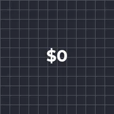
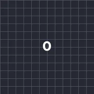

Conteggio crescente/decrescente

Modifica ogni numero in un livello di testo moltiplicandolo e aggiungendo un valore. Animando Moltiplica con keyframe da 0% a 100%, il conteggio arriva al numero inserito. Le parole restano invariate.
Impostazioni
| Impostazione | Tipo | Intervallo | Predefinito |
|---|---|---|---|
| Aggiungi | Numero | Da -100000 a 100000 | 0 |
| Moltiplica | Numero | Da -200% a 200% | 100% |
| Cifre decimali | Scelta | Come inserito, 0, 1, 2, 3 | Come inserito |
| Migliaia | Scelta | 1000.5, 1,000.5, 1.000,5, 1 000.5 | 1000.5 |
Preset
Scegline uno dalla pagina dei dettagli dell'effetto nella Libreria effetti. Ognuno è un'impostazione già pronta che puoi continuare a modificare.

Conteggio crescente